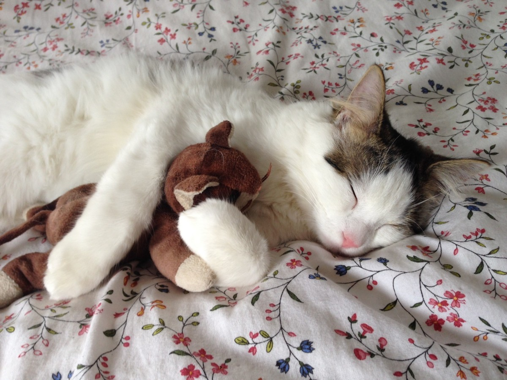
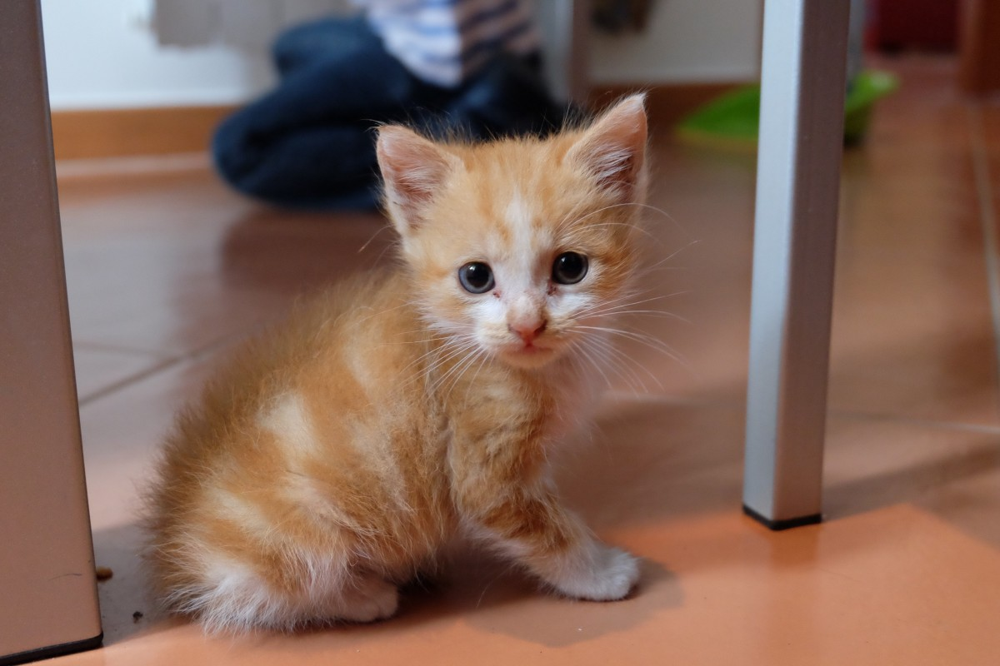
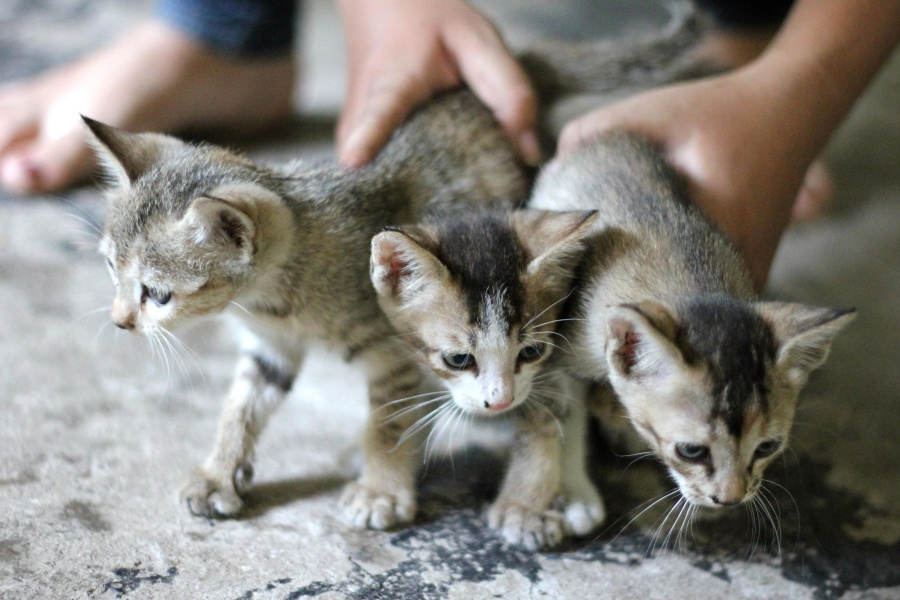
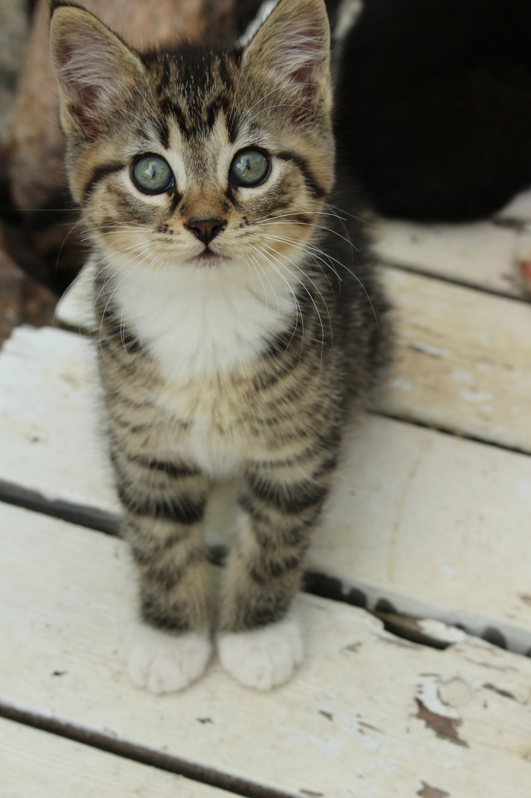
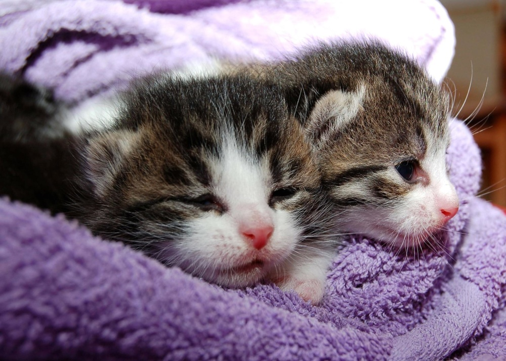
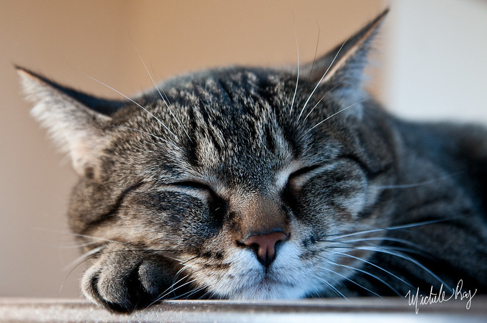
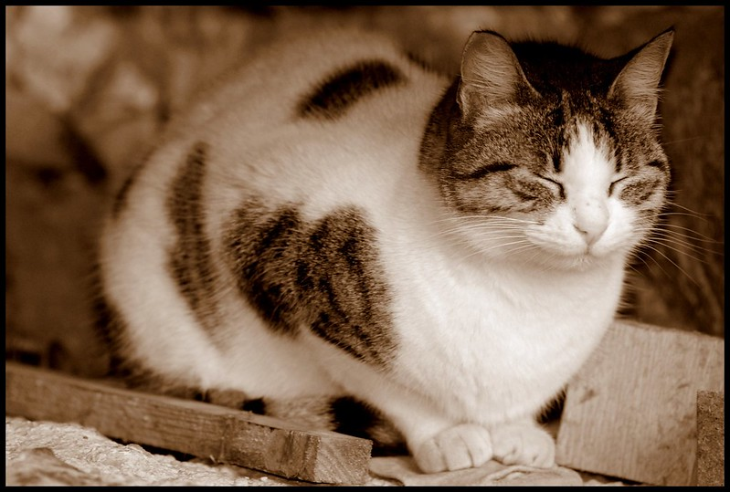

Mes sources images
Pour les images des chatons, j'ai utilisé les sites phxphere, pixnio et publicdomainpictures qui proposent des images libre de droits (pour une utilisation non commerciale) :
-  : un chaton qui dort avec son doudou, comme il est mignon !
-  : un petit chaton roux trop craquant
-  : trois chatons
-  : un chaton qui nous regarde, il est trop mignon
-  : deux chatons qui dorment blottis l'un à côté de l'autre
Pour les images des chats, j'ai utilisé le site flickr pour avoir également des images libre de droit (pour une utilisation non commerciale) :
-  : un chat qui dort profondément
-  : un chat qui ne dort peut-être que d'un œil